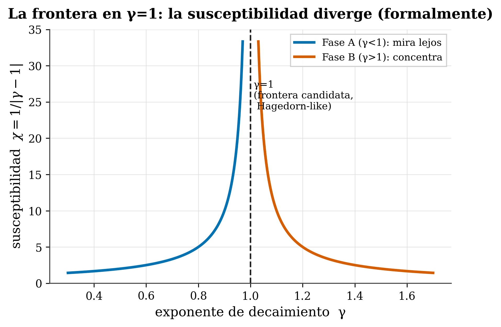

22 Estructura de fases y la función de partición polilog
Dónde estamos. Abrimos la Parte III: una lente física sobre la atención. Aviso de entrada, y va en serio: esto es una lente, una analogía. La termodinámica da intuición poderosa sobre la atención, pero hay que ser muy claro sobre qué es correspondencia real y qué es metáfora —y qué de esto es nuestro y qué es de otros—. Este capítulo lo explica con esa honestidad por delante.
22.1 La idea en una frase
La distribución de la atención se puede leer como un sistema termodinámico con una “función de partición”; en particular, sobre la distancia toma forma de polilogaritmo, y γ=1 aparece como una frontera candidata entre dos fases.
22.2 Conceptos clave y su papel en el transformer
Antes de entrar en detalle, definimos los términos de este capítulo y para qué sirve cada uno dentro de un transformer:
- Función de partición Z. Definición: el “censo” de un sistema físico —la suma de todos sus estados pesados por
e^(−energía/temperatura)—; conocerla da energía media, fluctuaciones, etc. En el transformer: es el normalizador del softmax de la atención; aquí la miramos sobre la distancia entre tokens, no sobre el contexto. - Polilogaritmo
Li_s(z). Definición: la suma \(\sum_{k\ge1} z^k/k^s\); enz=1es la zeta de Riemannζ(s). En el transformer: es la forma que toma Z cuando la atención decae como una power-lawd^−γ—el normalizador genérico de cualquier cola de potencia—. - Exponente γ. Definición: el ritmo de decaimiento de la atención con la distancia (
A(d)∝d^−γ, Cap. 15). En el transformer: es la palanca de control del sistema; ocupa el papel del exponentesdel polilog y decide en qué fase está el modelo. - Transición de fase. Definición: un cambio cualitativo y brusco al cruzar un valor crítico (el agua que hierve a 100 °C). En el transformer: el marco para preguntarnos si el comportamiento de la atención cambia de golpe al cruzar γ=1.
- Temperatura de Hagedorn. Definición: una temperatura límite (de la física de hadrones) por encima de la cual la función de partición diverge. En el transformer: la analogía etiquetada del punto donde
Li_γdeja de converger —ilustra la divergencia, no afirma la física literal—. - Frontera γ=1 (Fase A / Fase B). Definición: el valor donde
Li_1deja de converger igual, separando Fase A (γ<1, mira lejos) de Fase B (γ>1, concentra). En el transformer: la frontera candidata entre un modelo que reparte atención a lo lejano y uno que la concentra cerca. - Susceptibilidad χ. Definición:
χ=1/|γ−1|, cuánto reacciona el sistema a un cambio diminuto de la palanca. En el transformer: se dispara en γ=1, señalando que ahí el comportamiento de la atención cambia abruptamente.
La idea de fondo: leer la atención como un sistema con fases, y γ como el termómetro que dice de qué lado de la frontera está cada modelo.
22.3 La lente termodinámica (que NO es nuestra)
En física, una función de partición Z es el “censo” de un sistema: suma todos los estados posibles, pesando cada uno por e^(−energía/temperatura), de modo que los estados de baja energía cuentan más. Conocer Z lo da todo (energía media, fluctuaciones, etc.).
Resulta que la atención encaja en este molde: el softmax es una distribución de Boltzmann (Cap. 4), con los logits como energías y una temperatura efectiva. Esto no lo inventamos nosotros: es un marco activo —el “isomorfismo termodinámico de los transformers” (Kim 2026) deriva el softmax minimizando una energía libre, y usa un pico de capacidad calorífica como precursor del grokking— sobre una tradición de décadas (Jaynes (1957); la mecánica estadística del aprendizaje de Gardner (1988), Engel y Van den Broeck (2001)). Decir “hicimos termodinámica de la atención” sería falso.
22.4 Lo específicamente nuestro: Z sobre la distancia → un polilogaritmo
Nuestra variante mira la función de partición sobre la distancia entre tokens (no sobre los tokens de contexto por energía, como hace Kim). Si la atención decae como d^−γ (Cap. 15), su normalizador toma la forma de un polilogaritmo:
\[ Z = \mathrm{Li}_\gamma(e^{-\lambda}), \qquad \mathrm{Li}_s(z) = \sum_{k\ge 1} \frac{z^k}{k^s} \]
Qué dice cada parte:
- Z = la función de partición (el “censo” de antes).
- Li_s(z) = el polilogaritmo, que no es más que la suma \(\sum_{k\ge1} z^k/k^s\).
- k = la distancia (el índice de la suma: 1, 2, 3, …).
- s = γ = el exponente de decaimiento: cada distancia k pesa como
1/k^γ—justo la ley de potencia—. - z = e^{−λ} = un factor que amortigua las distancias grandes; λ actúa como un “potencial” (a mayor λ, menos peso a lo lejano). En el límite z→1 (λ→0),
Li_γse convierte en la zeta de Riemannζ(γ).
El polilogaritmo Li_s es simplemente el normalizador genérico de cualquier distribución con cola de potencia (y en z=1 es la zeta de Riemann ζ(s)). Que “la función de partición sea un polilog” es matemática automática si la distribución es power-law: no es un descubrimiento. Lo que aportaría valor es mostrar que la distribución de distancia realmente tiene esa forma y que γ es un parámetro de control medible —no el nombre de la función—.
22.5 Fases y la frontera de Hagedorn
Aquí está la estructura interesante. Una transición de fase es un cambio cualitativo y brusco al cruzar un valor crítico:
🧩 Analogía. Agua a 100 °C: das calor y la temperatura sube… hasta justo 100 °C, donde se estanca —cada julio extra convierte líquido en vapor en vez de subir la temperatura—. Una palanca cruza un valor y la sustancia se reorganiza de golpe.
La temperatura de Hagedorn (de la física de hadrones) (Hagedorn 1965) es un caso extremo: una temperatura límite por encima de la cual la función de partición diverge, porque el número de estados crece exponencialmente. No puedes calentar más allá: la energía extra crea estados nuevos en vez de subir la temperatura.
En nuestra lente, γ=1 es la frontera candidata: es donde el polilog deja de converger igual (Li_1 diverge), separando Fase A (γ<1, mira lejos) de Fase B (γ>1, concentra). La susceptibilidad χ = 1/|γ−1| —que mide cuán violentamente reacciona el sistema a un cambio diminuto— se dispara ahí (que se dispare en γ=1 señala que el comportamiento cambia de golpe):

Cuidado con el nombre. (1) “Hagedorn” es una analogía etiquetada: una Hagedorn de verdad exige crecimiento exponencial de estados; nosotros mostramos un mecanismo de divergencia (Li_γ en γ→1), no afirmamos la física literal. (2) Y el punto más delicado: nuestro vecino más cercano (Kim 2026) NO observa una divergencia —reporta explícitamente “ninguna divergencia power-law asintótica… solo un cruce de tipo crítico”—. Así que si γ=1 es una transición real o solo un cruce suave es una pregunta abierta: en N finito, Li_1 diverge solo como log N, lo que se parece más a un cruce que a un salto. Presentamos γ=1 como frontera candidata con evidencia, no como transición demostrada. (3) Además, nuestro propio cálculo de la capacidad calorífica en γ=1 tuvo un erratum (un factor 12 vs 4) que corregimos y verificamos en Lean —lo contamos en el Cap. 22—.
22.6 Por qué esta lente no es solo adorno
A pesar de las cautelas, la física conecta con lo práctico: γ=1 es exactamente la frontera de compresibilidad del KV-cache (Cap. 20) —el punto donde el polilog deja de converger es el mismo donde una ventana finita deja de capturar la masa—. La lente termodinámica y la herramienta de ingeniería señalan el mismo umbral. Eso es lo que hace la analogía valiosa: no por sonar elegante, sino porque predice dónde cambian las cosas.
tafagent clasifica tu modelo en Fase A o B respecto a la línea γ=1 y reporta la susceptibilidad χ. Verás que los modelos del atlas (Cap. 16) se agolpan justo por debajo de γ=1 —cerca de esa frontera—.
22.7 Resumen
- La lente termodinámica lee el softmax como Boltzmann y define una función de partición Z. No es nuestra (Kim (2026) + tradición Jaynes/Gardner).
- Nuestro: Z sobre la distancia → forma polilog
Z=Li_γ(e^−λ); γ=1 como frontera candidata (Fase A/B), con χ=1/|γ−1| divergiendo ahí. - Honesto: el polilog es el normalizador automático de una power-law; “Hagedorn” es analogía; y si γ=1 es transición o solo cruce está abierto (el vecino no ve divergencia); + erratum propio en C_V(γ=1), corregido en Lean.
- Valor: γ=1 coincide con la frontera de compresibilidad del KV (Cap. 20) — la física señala el mismo umbral que la práctica.
Siguiente (Capítulo 22): el “diccionario” termodinámico completo —temperatura, capacidad calorífica, información de Fisher— y la identidad que sí está verificada en Lean: Fisher = C_V.
22.8 Ejercicios
- Función de partición. En una frase: ¿qué “censa” Z y por qué conocerla lo da todo?
- El polilog. ¿Por qué decimos que “Z es un polilog” no es, por sí solo, un descubrimiento?
- Transición vs cruce. ¿Qué diferencia hay entre una transición de fase (agua a 100°C) y un cruce suave (mantequilla ablandándose)? ¿Cuál ve el vecino Kim?
- Honestidad. ¿Por qué llamamos a γ=1 “frontera candidata” y no “transición de fase demostrada”?